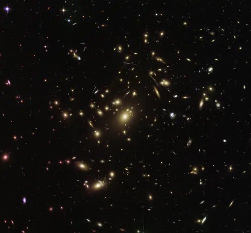

ASTRONOTICIAS:
La NASA advirtió que el Sol entró en un período de máxima actividad: espera más auroras y problemas en satélites
ingrese a la noticia
El proyecto más arriesgado de la NASA en décadas y otras misiones espaciales de gran envergadura previstas para 2024
ingrese a la noticia
ALERTA MUNDIAL: la NASA informó que un planeta de 220 metros se dirige a la Tierra
ingrese a la noticia
